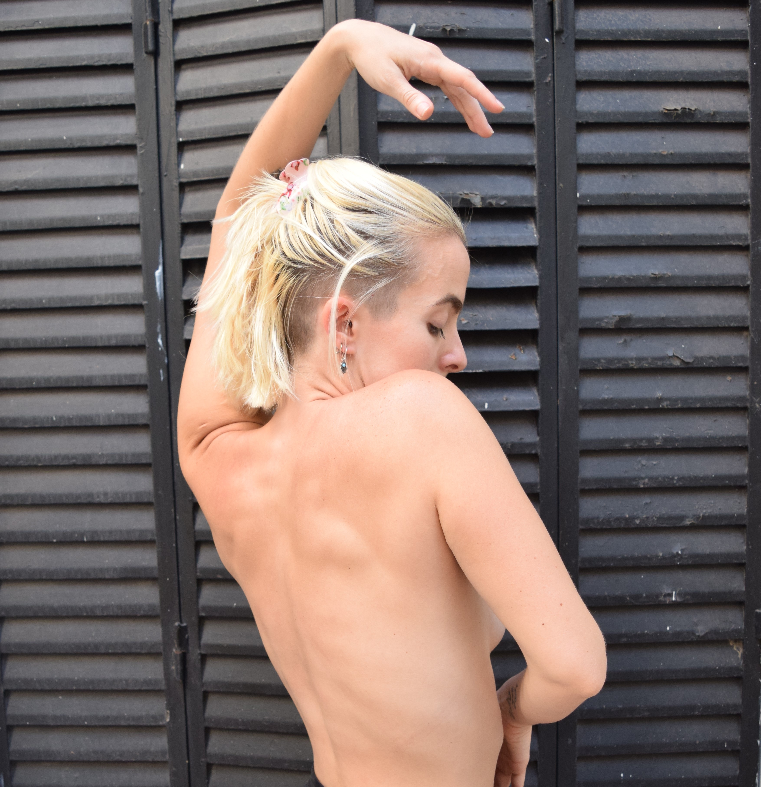

El Yoga es una filosofía milenaria nacida en la India que busca la armonía entre el cuerpo (Asanas), la respiración (Pranayama) y la mente (Meditación). Como toda filosofía hay diversas maneras de interpretarlo y de llevarlo a cabo. Elijo repensar y reformular algunos viejos mandatos que trae consigo y potenciar las maravillosas herramientas de autoconocimiento que nos brinda.
Pilates
En Pilates prima por sobre todas las cosas la armonía de nuestro cuerpo, se busca entrenar las
diferentes cadenas musculares, respetando la anatomía propia, evitando de esta manera lesiones y
tensiones innecesarias. Fuerza, flexibilidad, coordinación y respiración son los ejes de esta técnica.
Joseph Pilates, lo crea a principios del siglo XX durante la segunda guerra mundial, en la sala de un
hospital frente a la necesidad de rehabilitarse así mismo y a sus compañerxs.

Las clases de entrenamiento están pensadas para aquellas personas que quieren aumentar su capacidad de rendimiento físico global. Trabajamos de manera aeróbica y anaeróbica, pasando por las principales cadenas musculares del cuerpo. Nunca dejamos de lado la salud física, es por eso que en estas clases buscamos el equilibrio justo entre aumentar la potencia constantemente sin perder de vista el estado general del cuerpo.
Entrenamiento
Danza
La danza es para mi una forma de moverme en la vida, todo es danzable, en todo encuentro la danza, desde los pequeños movimientos cotidianos hasta en grandes coreografías. Bailar es sin dudas mi mayor felicidad y pasión. Es por eso que en las clases lo que mas me interesa es acompañar el proceso de cada alumne hacia la conexión con su propia danza, encontrar los diferentes ritmos que nos habitan, las infinitas formas y figuras por las que puede transitar nuestro cuerpo. Y por sobre todo el disfrute, el placer, el fuego interno que enciende la danza.
